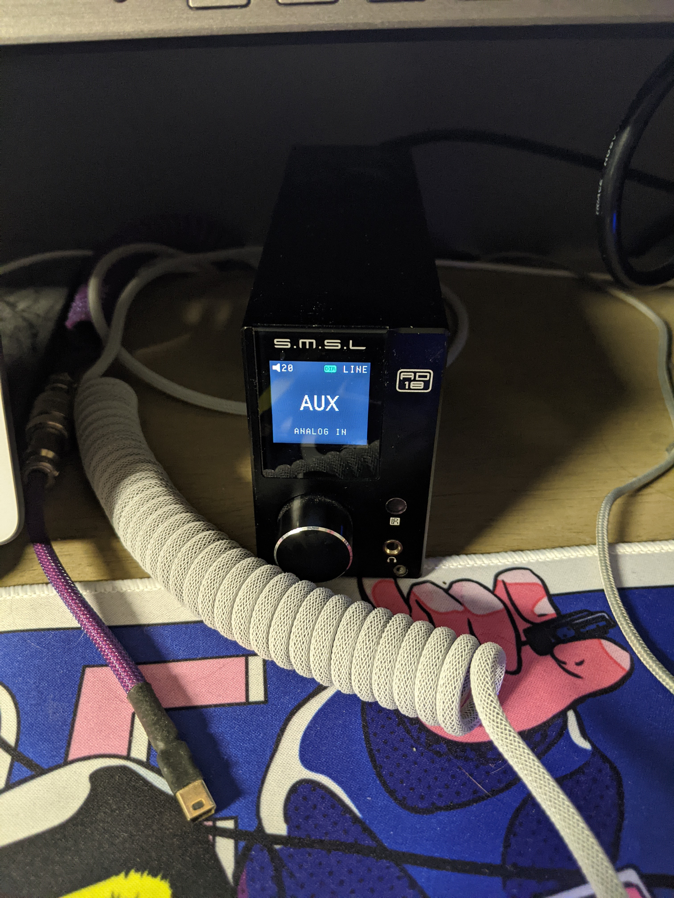

Vinyl Setup
Afternoon,
Today, I thought it would be a great idea to share my audio equipment. I happen to love audio equipment quite a bit, and would say that music is a big part of my life. Now, Vinyl is one of the most unconventional way to listen to music, but the whole experience is a great treat, forcing you to listen to the music. I love the whole process and everything about it, and would love to share it.
I had to put in some keyboard stuff, as that is my other hobby!
Speakers - Kef Q150
I had gotten my start with audio equipment from a buddy at a local best buy. He was in charge of the high end audio equipment, and he showed me a wonderful pair of headphones, the Audeze LCD-2, and I was instantly in love. I never knew how much of a difference there was in music. After a little bit, I wanted a break from headphones and get a set of speakers. That is when I heard his KEF Q150’s, and was absolutely blown away. The high range these can handle are quite insane. Beautiful highs, amazing mids, but lack a little bit in the lows. Which I found quite alright as I don’t like to blast my music. I chose to mount these above my head, which does raise the sound stage above me, but I still love them. the Uni-Q driver array, putting the tweeter and mid in one spot was absolutely brilliant, and I am now a KEF fanboy. I hope to own a set of their floorstanding speakers one day!
Amp - SMSL AD18
For the amp, I had picked up an SMSL AD18. I wanted something that I could just keep on my desk, and take up minimal space. This little guy has no problem driving both kefs, at a pretty high volume as well. I believe it was 80 watt a channel, which is incredible for the size! I have this little guy hooked up to my turntable, as well as my computer, and can easily switch between the two right in front of me.

Dont mind the cables!
Turntable - Technics SL-Q300
This Technics turntable was a hand-me-down from my father, who recently found a newer model technics turntable. He has been using this thing for a while now, and it was a sweet little system! From what I understand, it was pretty rare to find these with a clear cover thats not fogged up, so its in better of a condition.
Listening to: Cosmo Shelldrake
All in all, this is a great little setup, and I am quite proud of it. The only real change I need to make is to get a better grounding cable, and a different Composite cable as this one is buzzing a little bit. But I am happy to start listening to my collection, as it has been almost half a year of collecting without actually being able to listen! So I am very Excited! I plan to also hook up my big tube amp to it as well, so I can take the occasional listen with my cans!
I am a huge Nujabes fan, I am happy I can finally listen to these!